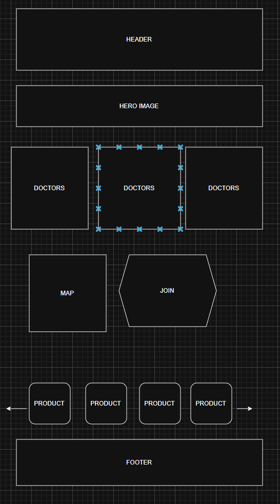

Medic Team 4tress REASON: I want to make the page of a medical center, and the game of TEAM fortress has a medic so I like the idea, is an artistic decision
Show information about the clinic, prices of the medicine and make appointments.
Someone is very sick and wants to find a good medic, well, this is the site, or someone just wants to get an answer for a quick question, or wants to buy medicine
MAIN: #5A9BD5 SECONDARY: #1F3F66 Background Content: #B7D7F0 AROUND Background: #EDF6FF background White: #FFFFFF
Roboto will be used for all letters in the website to keep consistency

1 favicon 2 social Meta data 3 JS data fetching (probably for the products, at least 15, 4 data propeties for each) 4 local storage to persist data client-side (e.g., user preferences, application state). 5 1 modal 6 video showing how I used JS -with camara -3-5 minutes -Attach the video to the footer of each page notes: -lazy loading -form giving thanks -attribuite sources